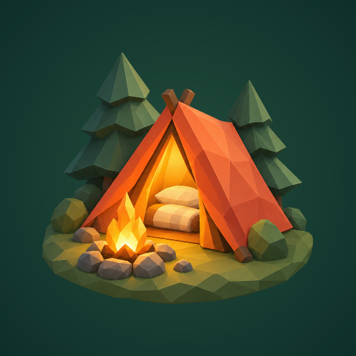
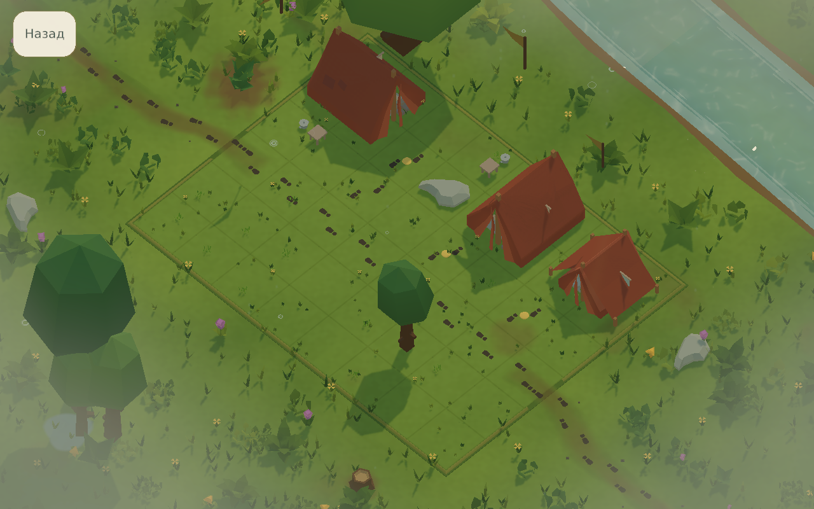
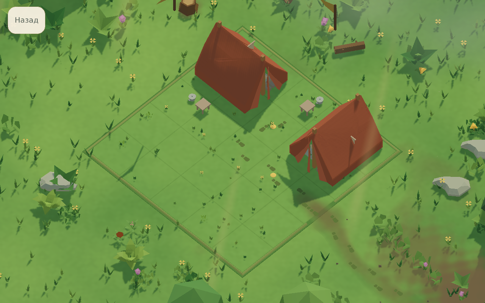
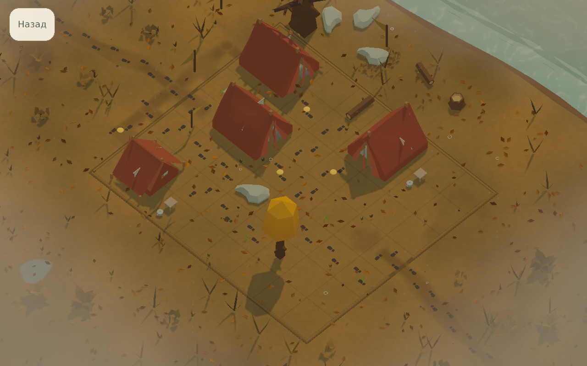
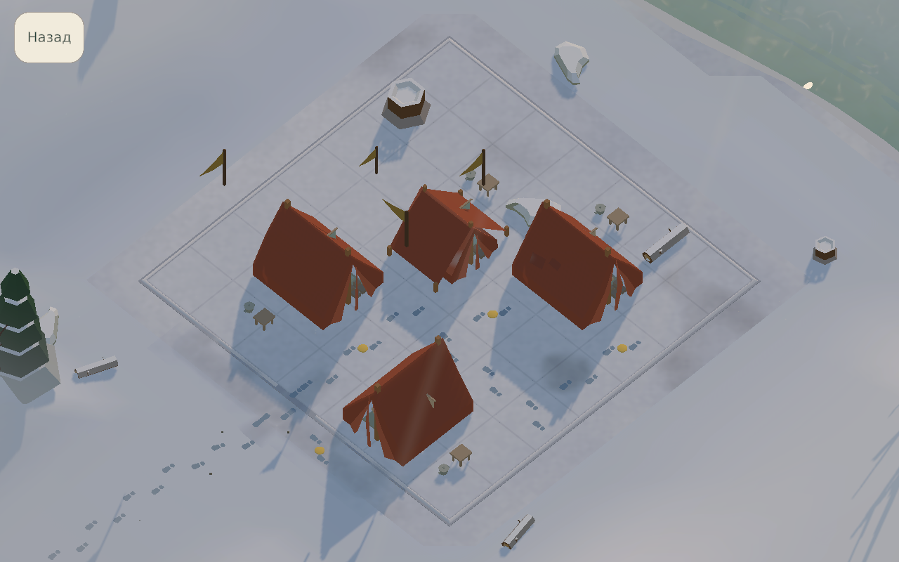
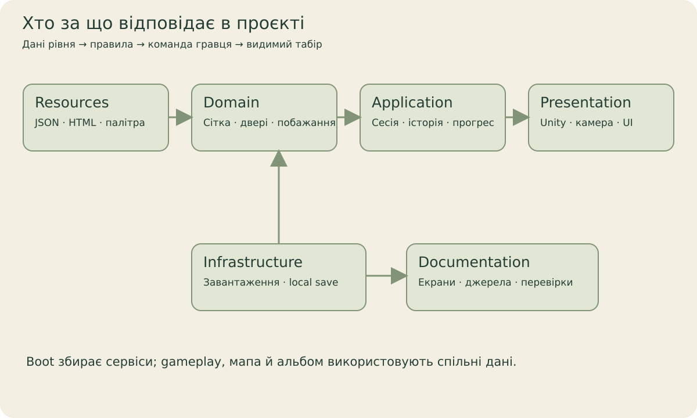

Шлях
Залиш доступ до дверей мережею проходів.

Quiet CampІлюстрований довідникМаленькі рішення. Теплі місця.
Спокійна просторова головоломка: розташуй намети, врахуй шлях, тінь, тишу й дружбу. Збережи табір, до якого хочеться повернутись.

QC001–QC005 · 10.10.2026
Мозаїчна зупинка, покинутий сад, ліс уздовж дротів, очеретяна переправа й тиха вода. П’ять місць одного 3D-світу; старі мапа та сюжетні меню в атласі нижче залишені як історичні кадри.
Від побажання до цілого табору
Обери гостя, перетягни й поверни намет. Undo та redo дозволяють спробувати інший варіант. Перевір розташування, коли всі на місці.
Залиш доступ до дверей мережею проходів.
Увесь намет гостя має бути в заданій тіні.
Обери місце поза зоною шуму багаття.
До трьох кроків проходом між дверима друзів.
Увесь основний інтерфейс
Знайди екран за назвою або розділом. Кожна картка пояснює шлях, дію та пов’язує її з реалізацією. Натисни на кадр, щоб роздивитися повністю.
36 екранів і станів
Запуск → документ → Увійти. Підтвердження документа не є згодою на аналітику.
Справжній кадр Unity, 08.10.2026. Окремий QA-профіль із підготовленим прогресом.
Продовжити, Мапа, Мої табори та налаштування. Остап знайомить із напрямками.
Справжній кадр Unity, 08.10.2026. Окремий QA-профіль із підготовленим прогресом.
Те саме меню після одноразового пояснення Остапа. Картки показують поточний прогрес.
Справжній кадр Unity, 08.10.2026. Окремий QA-профіль із підготовленим прогресом.
Меню → Мапа. Гортай головну дорогу; вузли показують виконане, доступне та приховане.
Справжній кадр Unity, 08.10.2026. Окремий QA-профіль із підготовленим прогресом.
Мапа → Подорожі. Каталог містить сюжетні гілки й додаткові місця; його можна гортати.
Справжній кадр Unity, 08.10.2026. Окремий QA-профіль із підготовленим прогресом.
Обери напрямок. Панель пояснює мотив, кількість місць та потрібний прогрес.
Справжній кадр Unity, 08.10.2026. Окремий QA-профіль із підготовленим прогресом.
Мапа → bonus-вузол. Тут видно умови прогресу, сезону та доступу; staging не видається за готову гру.
Справжній кадр Unity, 08.10.2026. Окремий QA-профіль із підготовленим прогресом.
Обери гостя, перетягни намет і поверни його. Картка містить ім’я, форму й побажання.
Справжній кадр Unity, 08.10.2026. Окремий QA-профіль із підготовленим прогресом.
Галявина → значок гостей. Порівняй побажання; повернення зберігає розташування.
Справжній кадр Unity, 08.10.2026. Окремий QA-профіль із підготовленим прогресом.
Коли всі намети на місці, доступна перевірка. Готове розташування ще треба перевірити.
Справжній кадр Unity, 08.10.2026. Окремий QA-профіль із підготовленим прогресом.
Верхній кут → Пауза. Продовжити, налаштування, знаки й навігація без втрати сесії.
Справжній кадр Unity, 08.10.2026. Окремий QA-профіль із підготовленим прогресом.
Пауза → Знаки. Пояснення символів під рукою; назад повертає до попередньої панелі.
Справжній кадр Unity, 08.10.2026. Окремий QA-профіль із підготовленим прогресом.
Пауза → Налаштування. Ті самі категорії доступні без виходу з поточної галявини.
Справжній кадр Unity, 08.10.2026. Окремий QA-профіль із підготовленим прогресом.
Правильна перевірка зберігає табір. Далі можна йти вперед або переглянути альбом.
Справжній кадр Unity, 08.10.2026. Окремий QA-профіль із підготовленим прогресом.
Меню → Мої табори. Обери мініатюру, обертай 3D-сцену, повтори рівень або залишись.
Справжній кадр Unity, 08.10.2026. Окремий QA-профіль із підготовленим прогресом.
Альбом → Залишитись. Основні панелі зникають; табір можна спокійно роздивитися.
Справжній кадр Unity, 08.10.2026. Окремий QA-профіль із підготовленим прогресом.
Меню → шестерня. Звук, комфорт, вигляд, приватність, мова й повтор навчання.
Справжній кадр Unity, 08.10.2026. Окремий QA-профіль із підготовленим прогресом.
Налаштування → Звук. Master, музика, атмосфера та effects мають окрему гучність.
Справжній кадр Unity, 08.10.2026. Окремий QA-профіль із підготовленим прогресом.
Налаштування → Комфорт. Масштаб тексту, contrast, reduced motion, calm pacing і haptics.
Справжній кадр Unity, 08.10.2026. Окремий QA-профіль із підготовленим прогресом.
Налаштування → Вигляд. Auto/Low/Balanced/High та орієнтація; це не звіт device FPS.
Справжній кадр Unity, 08.10.2026. Окремий QA-профіль із підготовленим прогресом.
Налаштування → Додаткове. Зароблені декоративні нагороди; optional ads лише з provider.
Справжній кадр Unity, 08.10.2026. Окремий QA-профіль із підготовленим прогресом.
Налаштування → Приватність. Дані, необов’язкова аналітика та документи розділені.
Справжній кадр Unity, 08.10.2026. Окремий QA-профіль із підготовленим прогресом.
Приватність → Дані. Пояснення збережень, remote requests і локальних дій.
Справжній кадр Unity, 08.10.2026. Окремий QA-профіль із підготовленим прогресом.
Приватність → Аналітика. Згода необов’язкова; default provider тут недоступний.
Справжній кадр Unity, 08.10.2026. Окремий QA-профіль із підготовленим прогресом.
Приватність → Документи. Документ, support та ліцензії; доступність URL залежить від конфігурації.
Справжній кадр Unity, 08.10.2026. Окремий QA-профіль із підготовленим прогресом.
Життя, підказки та жаринки. Реальні purchases/rewarded ads не підключені.
Справжній кадр Unity, 08.10.2026. Окремий QA-профіль із підготовленим прогресом.
Перша галявина → наступний guided крок. Остап пояснює дію поряд із наметами.
Справжній кадр Unity, 08.10.2026. Окремий QA-профіль із підготовленим прогресом.
Навчання → Пропустити. Окреме підтвердження дозволяє лишитися або пропустити.
Справжній кадр Unity, 08.10.2026. Окремий QA-профіль із підготовленим прогресом.
HUD → Підказка. Можливі клітини або ghost розміщення; витрачає один hint.
Справжній кадр Unity, 08.10.2026. Окремий QA-профіль із підготовленим прогресом.
Торкнись поставленого намету. Chip біля нього відкриває поворот і видалення.
Справжній кадр Unity, 08.10.2026. Окремий QA-профіль із підготовленим прогресом.
Після undo можна повернути скасовану дію через redo. Історія належить поточній сесії.
Справжній кадр Unity, 08.10.2026. Окремий QA-профіль із підготовленим прогресом.
Дані → Інформація. Розгортає опис local saves, optional services і backups.
Справжній кадр Unity, 08.10.2026. Окремий QA-профіль із підготовленим прогресом.
Дані → Скинути. Окрема destructive дія має підтвердження; у capture її скасовано.
Справжній кадр Unity, 08.10.2026. Окремий QA-профіль із підготовленим прогресом.
Дані → Очистити. Повне локальне очищення відрізняється від reset; у capture скасовано.
Справжній кадр Unity, 08.10.2026. Окремий QA-профіль із підготовленим прогресом.
Ресурси → Обмін. Потрібне явне підтвердження; wallet тут синтетичний, дію скасовано.
Справжній кадр Unity, 08.10.2026. Окремий QA-профіль із підготовленим прогресом.
Journey preview → Відкрити. Прогрес і жаринки перевіряються перед підтвердженням.
Справжній кадр Unity, 08.10.2026. Окремий QA-профіль із підготовленим прогресом.
Нічого не знайдено. Спробуй інше слово або розділ.
Інтерфейс у кадрах український. Усі знімки — справжні Unity captures з окремого QA-профілю, а не store mockups. Недоступні provider/error states пояснено в повному атласі.
Світ, до якого повертаєшся
Після завершення табір зберігається в альбомі. Обертай сцену, повертайся до спогаду або прибери панелі й залишись на мить. Сезони змінюють атмосферу, а правила залишаються в даних рівня.



Історичні кадри альбому від 08.10.2026, 1280 × 800. Нова безперервна мапа QC001–QC005 активована й перевірена в Editor 10.10.2026.
Для тих, хто відкриває проєкт
Правила, сесія, дані й presentation мають власні шари. Навігація в репозиторії веде до source owners, design notes та інструкції першого запуску.

Перевірений зріз · 10.10.2026
Gameplay, локальні saves, навчання, меню та альбом працюють у development project. Реальні покупки й rewarded ads не підключені. Наявність 110 місць у каталозі не підтверджує acceptance кожного рівня чи mobile performance.
Нова мапа має native URP і Game View кадри, успішний цикл QC001–QC005 та відео маршруту від 10.10.2026. 44 кадри атласу датовані 08.10, чотири кадри оптимізації — 09.10. Mobile FPS і фактичний звук не перевірені.